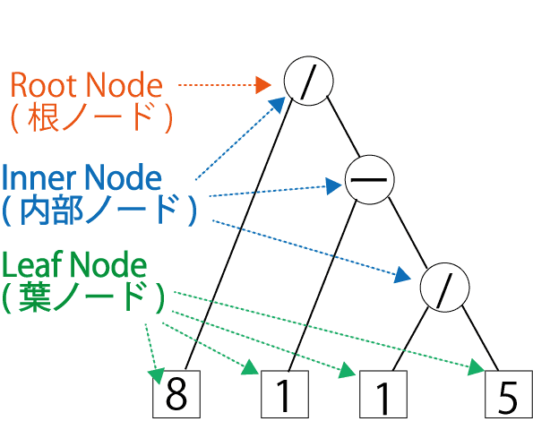
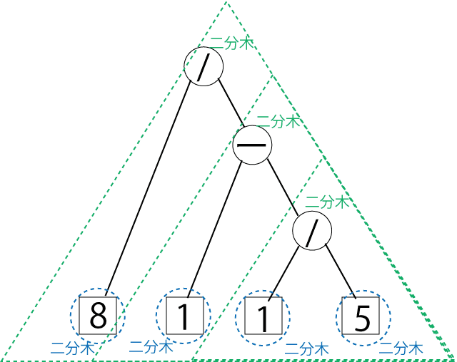

プログラミング言語論および演習 (演習前半)
** 切符問題 **
Table of Contents
切符問題とは?
概要
- 普段あまり意識することはないが，切符には4つの整数が印字されている．
- この4つの数字 (上の例では"8115") に適切に括弧付けと四則演算をすることで結果をちょうど10にすることが出来るだろうか?
- また出来る場合にいくつの括弧付け四則演算の組合せが存在するだろうか?
切符問題
切符問題を以下のように定義する．
- (入力)
- 4つの整数の列 – 切符に印字された整数に対応 (上記の例では"8115")
- 目的整数 – 結果を何の数字にするか (上記の例では10)
- (出力)
- 与えられた整数列 (順序固定) に括弧付けおよび四則演算を行った式の中で演算結果が目的整数と一致するもの
- 但し，演算は3回行うものとする (つまり 81-15 とかはだめ)．
- 与えられた整数列 (順序固定) に括弧付けおよび四則演算を行った式の中で演算結果が目的整数と一致するもの
以降，簡単のために誤解が無い場合には切符問題を ("8115", 10) などと対で標記する．
- 切符問題のバリエーションとして，整数列の順序を変更して良い問題も考えられる．
- この問題は「 順序可変の切符問題」と呼び以後区別する．
計算機で切符問題を解くためのアプローチ
切符問題と二分木
どうやって ("8115"，10) の切符問題を解けば良いだろうか？一つずつ試してみるのが一つの方法．
- ((8 + 1) - 1) - 5
- (8 + 1) - (1 - 5)
- …
但し，手でやるのは大変．計算機を使おう． ただ，上述のような括弧付けされた数式はどのようなデータ構造で表せるだろうか? 二分木 (全二分木) というデータ構造を使ってみる．
- 二分木の値を計算すること
- 二分木を全て列挙すること
ができれば列挙したそれぞれの二分木の値が目的整数と一致するかを確認することで答えが見つかるだろう． 実際この方法によって("8115",10)の解(8 / (1 - (1 / 5)))が計算できる．
二分木について用語の説明を行う． 切符問題のための二分木を，葉ノードに整数が，内部ノードに演算子がラベル付けされたものとして表す．("8115",10)の解(8 / (1 - (1 / 5)))は二分木を使うと次のように表すことができる．
|  |
 |
- 内部ノード (Inner Node) は必ず二つの子を持ち葉ノード (Leaf Node) は子を持たない．
- 親を持たないノードは根ノード (Root Node) と呼ばれる．
- 内部ノードの二つの子はそれぞれ左 (left) と 右 (right) と呼ばれる．
- 二分木はその各ノードを根ノードとする二分木から構成される再帰的な構造として捉えることができる．
このように括弧付けされた数式はは二分木によって表すことができる．
切符問題解法プログラム
二分木を使って問題を解くためのプログラムには次が必要になる．
- 二分木の表現
- 二分木が与えられた時にその値を計算する機能
- 与えられた演算子と整数の列からの二分木を洩れなく列挙する機能
これらの機能があれば二分木を列挙し一つ一つ評価することで解を見つけ，またその列挙を行うことができる．
以降，Scalaを使って切符問題解法プログラムを作る方法について説明する．
二分木の表現
クラスとオブジェクトの簡単な説明
- プログラミング言語論の講義でオブジェクトとクラスについては説明される (URL) 予定なので，ここでは簡単に説明する．
- オブジェクト指向プログラミングではなんらかの機能を持ったオブジェクトを組み合わせて新しい機能を持ったオブジェクトを構築し， 全体として一つのソフトウェア機械を実現する．
- しかし，同じ機能をもつ類似のオブジェクトを別々に定義するのは効率が悪い．
- Scala ではオブジェクトの型紙となる クラスを定義し，それを用いてオブジェクトを生成する．
- クラスの定義を型紙として，型紙から生成された具体例 (インスタンス) が個々のオブジェクトとなる．
Scalaにおける二分木の表現
3つのクラスによって二分木を表現する．抽象クラス Treeを Leafと Nodeクラスが継承するようにする． Scala のプログラムは以下のようになる．
abstract class Tree case class Leaf(n: Int) extends Tree case class Node(op: String, left: Tree, right: Tree) extends Tree
- 抽象クラス Tree
- 二分木の共通な機能・性質を表す．抽象クラスなのでオブジェクトは生成できない．
- ケースクラス Leaf
- 葉ノードを根ノードとする二分木を表す．
- Int型 n. 葉ノードに入っている整数値を表す．
- ケースクラス Node
- 内部ノードを根ノードとする二分木を表す．
- String型 op. 内部ノードに入っている演算子を表す．
- Tree型 left. 左の二分木を表す．
- Tree型 right. 右の二分木を表す．
- 上記クラスの関係を図示すると次のようになる．
("8115",10) の解を表す二分木のオブジェクトを作ってみよう (以下は Scala Worksheet の出力)．
/** * Scala Worksheet (week05.sc) */ val subTree0 = Leaf(1) //> subTree0 : Leaf = Leaf(1) val subTree1 = Node("/", subTree0, Leaf(5)) //> subTree1 : Node = Node(/,Leaf(1),Leaf(5)) val subTree2 = Node("-", Leaf(1), subTree1) //> subTree2 : Node = Node(-,Leaf(1),Node(/,Leaf(1),Leaf(5))) val subTree3 = Node("/", Leaf(8), subTree2) //> subTree3 : Node = Node(/,Leaf(8),Node(-,Leaf(1),Node(/,Leaf(1),Leaf(5))))
ここでは生成したオブジェクトを変数 subTree0， subTree1， subTree2， subTree3に格納している．
これらはオブジェクトを表す変数であり，オブジェクト変数と呼ばれる．
どのように全体の二分木が構成されるかを図示すると次のようになる．
もちろんオブジェクト変数にいちいち格納しなくても，いきなり全体のオブジェクトを生成することもできる．
/** * Scala Worksheet (week05.sc) */ Node("/", Leaf(8), Node("-", Leaf(1), Node("/", Leaf(1), Leaf(5)))) //> res0: Node = Node(/,Leaf(8),Node(-,Leaf(1),Node(/,Leaf(1),Leaf(5))))
二分木が与えられた時にその値を計算する
- ここまでで，Scala で二分木を表すことができた．
- 次は二分木が与えられた時にその値を計算する機能を追加する．
- 具体的には定義したクラスにDouble型の値を返すメソッド value を追加する．
- クラスにメソッドを記述すると，生成されたオブジェクトでそのメソッドを使えるようになる．
value メソッド ( Treeクラス)
- メソッド value は内部ノードにも葉ノードにも共通したメソッドであるので 抽象クラス Treeにメソッドの仕様 (メソッド名，引数，戻り値の型) を記述する．
abstract class Tree { def value: Double }
- ここでは引数が無しで戻り値がDouble型のメソッド value を定義している．但し，その具体的な処理については書かれていない．
- 抽象クラスではメソッドの中身 (実装) を書かずに仕様だけを定義できる．
- 抽象クラス Treeで中身がないメソッドが定義されると，それを継承する Leafと Nodeでその中身を書く必要がある.
value メソッド ( Leafクラス)
- Leafでメソッド valueの中身を書く (実装する).
case class Leaf(n: Int) extends Tree { def value = n.toDouble }
- Leafクラスのメソッド valueの実装は簡単．ラベルを表すInt型のnをDouble型に変換するだけで良い．
- = の後に関数の定義の中身 (実装) を記述する．
- なお上記のメソッド定義は波括弧を省略した形である (実装が一行の場合は省略できる)．メソッドの定義が複数行になるときは次のように波括弧で囲む．
case class Leaf(n: Int) extends Tree { def value = { n.toDouble } }
- メソッドを定義すると次のように呼び出すことができる．
/** * Scala Worksheet (week05.sc) */ val subTree0 = Leaf(4) subTree0.value //> res1: Double = 4.0 Leaf(4).value //> res2: Double = 4.0
- 上はオブジェクト変数に格納してから呼ぶ場合．下は直接呼ぶ場合である．
value メソッド ( Nodeクラス)
- Nodeでメソッド valueを実装する.
case class Node(op: String, left: Tree, right: Tree) extends Tree { def value = op match { case "+" => left.value + right.value case "-" => ??? case "*" => ??? case "/" => ??? } }
- Nodeクラスでは，ラベルを表す String型の opによって計算が異なることをメソッド valueに反映させる必要がある． 上記の例では match 式を使って演算子の場合分けをし，それぞれの処理を => の右側に書いている．
- left と right は Tree型，すなわち Leaf型もしくは Node型である．
- もし leftが Leaf型であれば Leafクラスの valueメソッドが自動的に呼ばれる．
- もし leftが Node型であれば Nodeクラスの valueメソッドが自動的に呼ばれることになる．そしてこれは再帰的に呼び出されることになる．
- 再帰プログラミングのいろいろな応用については ここ に詳しいので，興味がある人は学習してください．
- rightも同様である．
- 例えば(1 + (1 + 5))は以下のように計算される．
- (演習)
- 上記の???を埋めて他の演算 ("-", "*", "/") の場合を実装せよ
- (テスト) 次のように出力されればOK!
- 自分で他の式も試してみよう!!
/** * Scala Worksheet (week05.sc) */ Node("/", Leaf(8), Node("-", Leaf(1), Node("/", Leaf(1), Leaf(5)))).value //> res11: Double = 10.0 Node("-", Node("*", Leaf(7), Leaf(5)), Node("*", Leaf(5), Leaf(5))).value //> res12: Double = 10.0
valueEquals メソッド
- 計算誤差を無視するためにメソッド valueEqualsを Treeに実装する．
- Leaf でも Node でも動作は同じなので Treeの中に実装する．
abstract class Tree { def value: Double def valueEquals(x: Double): Boolean = math.abs(x - value) < 1e-5 }
- 式(1 / 3) * (7 / 2)と式(7 / 6) + 1 - 1の値は==を使うとfalseになってしまう．
- 誤差を無視するために定義したメソッド valueEqualsを使う．
- (注意) Double型なので11ではなく11.0と記述することに注意．
/** * Scala Worksheet (week05.sc) */ val c1 = Node("*", Node("/", Leaf(1), Leaf(3)), Node("/", Leaf(7), Leaf(2))) //> c1 : Node = ((1 / 3) * (7 / 2)) val c2 = Node("-", Node("+", Node("/", Leaf(7), Leaf(6)), Leaf(1)), Leaf(1)) //> c2 : Node = (((7 / 6) + 1) - 1) c1.value == c2.value //> res7: Boolean = false c1.valueEquals(c2.value) //> res8: Boolean = true
toString メソッド
- 現状では Tree型をprintlnしたときの表示が見にくい
- toString はメソッドを上書きすることによって，表示を見やすくする.
- toString は暗黙的に既に実装されているので上書き (override) する必要がある．
- Leaf クラス
case class Leaf(n: Int) extends Tree { def value: Double = n.toDouble override def toString = n.toString }
- Node クラス
case class Node(op: String, left: Tree, right: Tree) extends Tree { def value = ... override def toString = "(" + left.toString + " " + op + " " + right.toString + ")" }
- 以下のような出力になる
/** * Scala Worksheet (week05.sc) */ Node("/", Leaf(8), Node("-", Leaf(1), Node("/", Leaf(1), Leaf(5)))) //> res0: Node = (8 / (1 - (1 / 5)))
3つの整数の列からの二分木を洩れなく列挙する機能
- ここまでで二分木を表現でき，その値を評価できるようになった．
- 後は与えられた演算子と整数の列から二分木を洩れなく列挙できればプログラムの完成である．
- 4つの整数の列を考える前にまず3つの整数の列からの二分木を洩れなく列挙することを考えてみよう．
genTrees2, genTrees3 関数の実装
- なおここから先のプログラムは上記のクラスが書かれた TestTree.scala ファイル内の object TestTree の波括弧内に書くことする．
abstract class Tree = { ... } case class Leaf(n: Int) extends Tree = { ... } case class Node(op: String, left: Tree, right: Tree) extends Tree = { ... } object TestTree { // ここに二分木を洩れなく列挙する関数を書いていく def genTrees2(x1: Int, x2: Int): Seq[Tree] = { ... } // 以下同様 }
- テストは Worksheet から以下のように行えばよい (object week05の波括弧内)．
- for や foreach の使い方を忘れた人は Scalaでリスト処理 で復習しよう
/** * Scala Worksheet (week05.sc) */ // テストの例 (for を使った方法) for (tree <- genTrees2(1,2)) println(tree) //> (1 + 2) //| (1 - 2) //| (1 * 2) //| (1 / 2) // テストの例 (foreach を使った方法) genTrees2(1,2).foreach(println) //> (1 + 2) //| (1 - 2) //| (1 * 2) //| (1 / 2)
- まずは2つの整数の列が与えられた時に洩れなく列挙する関数を考えよう．
- 繰り返しになるが，以下，関数の実装はTestTree.scala内の object TestTree の波括弧内に書く．
- Worksheet はテスト用!
def genTrees2(x1: Int, x2: Int): Seq[Tree] = { for { op <- ops } yield Node(op, Leaf(x1), Leaf(x2)) }
- これは簡単．上記の関数で可能になる．
- (テスト) Worksheet でテストして以下のように出力されればOK
- for や foreach の使い方を忘れた人は Scalaでリスト処理 で復習しよう
/** * Scala Worksheet (week05.sc) */ // テスト (for を使った場合) for (tree <- genTrees2(1,2)) println(tree) //> (1 + 2) //| (1 - 2) //| (1 * 2) //| (1 / 2) // テスト (foreach を使った場合) genTrees2(1,2).foreach(i => println(i)) //> (1 + 2) //| (1 - 2) //| (1 * 2) //| (1 / 2)
- 次のようにも書ける
/** * Scala Worksheet (week05.sc) */ genTrees2(1,2).foreach(println) //> (1 + 2) //| (1 - 2) //| (1 * 2) //| (1 / 2)
- 1+1, 1-1, 1*1, 1/1 が列挙されていることが分かる.
- 次に3つの整数の列が与えられた時に洩れなく列挙する関数を考えよう．
def genTrees3(x1: Int, x2: Int, x3: Int) = { val trees1 = for { op <- ops tree <- genTrees2(x1, x2) } yield Node(op, tree, Leaf(x3.toInt)) val trees2 = for { op <- ops tree <- genTrees2(x2, x3) } yield Node(op, Leaf(x1.toInt), tree) trees1 ++ trees2 }
- 整数の列 x1, x2, x3 が与えられたとすると，これの括弧付けは
- (x1 op x2) op x3 もしくは
- x1 op (x2 op x3)
のどちらかになるはず．
- それらを trees1 と trees2 に入れて trees1 ++ trees2 で連結したものを返せばよい (連結について忘れた人は Scalaでリスト処理 を復習しよう．Listについて書かれているがSeqでもどうようにつかえる)．
- (テスト) Worksheet でテストすると以下のように出力されるはず
/** * Scala Worksheet (week05.sc) */ // テスト (for を使った場合) for (tree <- genTrees3(1,2,3)) println(tree.value + " " + tree) //> 6.0 (((1) + (2)) + (3)) //| 2.0 (((1) - (2)) + (3)) //| 5.0 (((1) * (2)) + (3)) //| 3.5 (((1) / (2)) + (3)) //| 0.0 (((1) + (2)) - (3)) //| -4.0 (((1) - (2)) - (3)) //| -1.0 (((1) * (2)) - (3)) //| -2.5 (((1) / (2)) - (3)) // ... 略 ... // テスト (foreach を使った場合) genTrees3(1,2,3).foreach{i => println(i.value + " " + i)} //> 6.0 (((1) + (2)) + (3)) //| 2.0 (((1) - (2)) + (3)) //| 5.0 (((1) * (2)) + (3)) //| 3.5 (((1) / (2)) + (3)) //| 0.0 (((1) + (2)) - (3)) //| -4.0 (((1) - (2)) - (3)) //| -1.0 (((1) * (2)) - (3)) //| -2.5 (((1) / (2)) - (3)) // ... 略 ...
genTrees3 関数で遊ぶ
3つの整数の切符問題を解く (解を列挙) プログラムを考えよう.
- 例えば ("123",6) のにはどのようなものがあるだろうか？
- 次のようにして見つけることができる．
- valueEqualsの引数はDouble型なので6.0として与えることに注意．
/** * Scala Worksheet (week05.sc) */ // for を使った場合 for (tree <- genTrees3(1,2,3) if tree.valueEquals(6.0)) println(tree) //> (((1) + (2)) + (3)) //| (((1) * (2)) * (3)) //| (((1) + (2)) + (3)) //| (((1) * (2)) * (3)) // foreach を使った場合 genTrees3(1,2,3).filter(_.valueEquals(6.0)).foreach(i => println(i)) //> (((1) + (2)) + (3)) //| (((1) * (2)) * (3)) //| (((1) + (2)) + (3)) //| (((1) * (2)) * (3))
- filter などについて忘れた人は Scalaでリスト処理 を復習しよう．
3つの整数，かつ，順序可変の切符問題の解を列挙して表示しよう．
- まず与えられた3つの整数の順列を求めるにはどうすれば良いだろうか?
- permutations 関数を使うと簡単である．
/** * Scala Worksheet (week05.sc) */ // 1, 2, 3 の順列の列挙 (for を使った場合) for (i <- Seq(1,2,3).permutations) println(i) //> List(1, 2, 3) //| List(1, 3, 2) //| List(2, 1, 3) //| List(2, 3, 1) //| List(3, 1, 2) //| List(3, 2, 1) // 1, 2, 3 の順列の列挙 (foreach を使った場合) Seq(1,2,3).permutations.toList.foreach(println) //> List(1, 2, 3) //| List(1, 3, 2) //| List(2, 1, 3) //| List(2, 3, 1) //| List(3, 1, 2) //| List(3, 2, 1)
- この permutations 関数を使えば3つの整数，かつ，順序可変の切符問題の解を求めるプログラムは次のようになる．
/** * Scala Worksheet (week05.sc) */ // for を使った a の定義 (1) val a = (for (xs <- Seq(1,2,3).permutations; tree <- genTrees3(xs(0), xs(1), xs(2))) yield tree).toList // (出力) for を使った場合 for (i <- a; if i.valueEquals(6.0)) println(i) //> ((1 + 2) + 3) //| ((1 * 2) * 3) //| ((1 + 2) + 3) //| ((1 * 2) * 3) //| ((1 + 3) + 2) //| ((1 * 3) * 2) //| ((1 + 3) + 2) //| ((1 * 3) * 2) //| ((2 + 1) + 3) // ... 略 ... // (出力) foreach を使った場合 a.filter(_.valueEquals(6.0)).foreach(i => println(i)) //> ((1 + 2) + 3) //| ((1 * 2) * 3) //| ((1 + 2) + 3) //| ((1 * 2) * 3) //| ((1 + 3) + 2) //| ((1 * 3) * 2) //| ((1 + 3) + 2) //| ((1 * 3) * 2) //| ((2 + 1) + 3) // ... 略 ...
- プログラムが一行で書くには長くなるので，途中の演算結果をaという変数に格納する．ここには"123"の順番を入れ替えた列 (すなわち順列) それぞれに対する二分木を列挙したものが入っている．
- a の定義は次のようにforの丸括弧を波括弧に変えて改行して書くこともできる
// for を使った a の定義 (2) val a = (for { xs <- Seq(1,2,3).permutations tree <- genTrees3(xs(0), xs(1), xs(2)) } yield tree).toList
- 次に (順序が変わらない) 通常の3整数の切符問題と同様に
- forと ifで処理する．もしくは，
- filterと foreachで処理する．
たくさんありそうなので size で個数を取得する (32個ある)
/** * Scala Worksheet (week05.sc) */ // for を使った b の定義 (1) val b = (for (xs <- Seq(1,2,3).permutations; tree <- genTrees3(xs(0), xs(1), xs(2))) yield tree).toList // (出力) for を使った場合 (for (i <- b if i.valueEquals(6.0)) yield i).size //> res3: Int = 32 // (出力) foreach を使った場合 b.filter(_.valueEquals(6.0)).size //> res3: Int = 32
- bの定義は次のようにforの丸括弧を波括弧に変えて改行して書くこともできる
// for を使った b の定義 (2) val b = (for { xs <- Seq(1,2,3).permutations tree <- genTrees3(xs(0), xs(1), xs(2)) } yield tree).toList
課題
genTrees4 関数
- (入力) 整数4つ. Int型の x1, x2, x3, x4
- (出力) 与えられた4つの整数列 (順序固定) から生成できる全てのTreeの列. Seq[Tree]型.
- (実装の条件) genTrees2, genTrees3 を呼び出す
- 関数の外枠 (??? を埋めると関数が完成する)
def genTrees4(x1: Int, x2: Int, x3: Int, x4: Int): Seq[Tree] = { val trees1 = for { op <- ops tree <- genTrees3(x2, x3, x4) } yield Node(op, Leaf(x1), tree) val trees2 = for { op <- ops tree <- ??? } yield Node(op, tree, Leaf(x4)) val trees3 = for { op <- ops tree1 <- ??? tree2 <- ??? } yield Node(op, tree1, tree2) ??? ++ ??? ++ ??? }
- (テスト) 次のようになればひとまずOK (但し，完全なテストではない)
/** * Scala Worksheet (week05.sc) */ genTrees4(8,1,1,5).size //> res8: Int = 320
findSolutions 関数 — 切符問題の解を列挙するプログラム
- (入力) Seq[Int]型のxs (長さは4で固定). Int型の a. (すなわち切符問題の入力)
- (出力) 与えられた4つの整数列 (順序固定) から値が a となる全てのTreeの列. Seq[Tree]型.
- (実装の条件) genTrees4 を呼び出す
- 関数の外枠 (??? を埋めると関数が完成する)
def findSolutions(xs: Seq[Int], a: Int): Seq[Tree] = { ??? }
- ヒント
- filter と valueEquals を使えば凄く簡単. 「genTrees3で遊ぶ」を参考にしよう．
- (テスト) 次のようになればOK
/** * Scala Worksheet (week05.sc) */ findSolutions(Seq(8,1,1,5), 10) //> res4: Seq[Tree] = List((8 / (1 - (1 / 5)))) findSolutions(Seq(7,5,5,5), 10) //> res5: Seq[Tree] = List(((7 * 5) - (5 * 5)))
- ここで期待通りの解が得られない場合は genTrees4 の実装が間違っている可能性があるので見直してみよう．
findAll の実装 — 順序可変の切符問題の解を列挙するプログラム
- (入力) 整数4つからなる列 Seq[Int]型の xs. 求めたい値 a.
- (出力) 与えられた4つの整数列 (順序の入れ替えを許す) から生成できる全てのTreeの列のうち値がaと一致するもの. Seq[Tree]型.
- (実装の条件) genTrees4 を呼び出す
- 関数の外枠 (??? を埋めると関数が完成する. )
def findAll(xs: Seq[Int], a: Int): Seq[Tree] = { for { xs1 <- ??? tree <- ??? if tree.valueEquals(a) } yield tree }
- ヒント
- permutations 関数を使えば簡単
- ??? のうちどちらかは genTrees4 を呼ぶはず
- (テスト) 次のようになればOK
/** * Scala Worksheet (week05.sc) */ // for を使った場合 for (i <- findAll(Seq(8,1,1,5),21)) println(i) //> ((8 * (1 + 1)) + 5) //| (((1 + 1) * 8) + 5) //| (5 + (8 * (1 + 1))) //| (5 + ((1 + 1) * 8)) // foreach を使った場合 findAll(Seq(8,1,1,5),21).foreach(println) //> ((8 * (1 + 1)) + 5) //| (((1 + 1) * 8) + 5) //| (5 + (8 * (1 + 1))) //| (5 + ((1 + 1) * 8))
チャレンジ課題
genTrees 関数
- (入力) 整数の列 (順序固定，長さ任意)．Seq[Int]型.
- (出力) 与えられた整数列 (順序固定，長さ任意) から生成できる全てのTreeの列. Seq[Tree]型.
- (実装の条件) 再帰プログラミングを使う．すなわち自分自身 genTrees を呼び出す．
- 再帰プログラミングについては ここ に詳しい．
- 再帰プログラミングについては ここ に詳しい．
- 関数の外枠
def genTrees(xs: Seq[Int]): Seq[Tree] = { ??? }
- (テスト) 次のようになればOK
/** * Scala Worksheet (week05.sc) */ genTrees(Seq(1,2,3)).size //> res6: Int = 32 genTrees(Seq(1,2,3,4)).size //> res7: Int = 320 genTrees(Seq(1,2,3,4,5)).size //> res8: Int = 3584 genTrees(Seq(1,2,3,4,5)).filter(_.valueEquals(10.0)).foreach(println) //> (1 + (2 + ((3 * 4) - 5))) //| (1 + ((2 + (3 * 4)) - 5)) //| (1 + ((2 * (3 + 4)) - 5)) //| ((1 + 2) + ((3 * 4) - 5)) //| (((1 + 2) / 3) + (4 + 5)) //| ((((1 + 2) / 3) + 4) + 5) //| ((1 - ((2 - 3) * 4)) + 5) //| ((((1 + 2) * 3) - 4) + 5) //| (1 - (((2 - 3) * 4) - 5)) //| (1 - ((2 - 3) * (4 + 5))) //| (((1 + 2) * 3) - (4 - 5)) //| ((1 + (2 + (3 * 4))) - 5) //| ((1 + (2 * (3 + 4))) - 5) //| (((1 + 2) + (3 * 4)) - 5) //| (1 * (((2 * 3) - 4) * 5)) //| ((1 + (2 + (3 - 4))) * 5) //| ((1 + ((2 + 3) - 4)) * 5) //| (((1 + 2) + (3 - 4)) * 5) //| (((1 + (2 + 3)) - 4) * 5) //| ((((1 + 2) + 3) - 4) * 5) //| (((1 * (2 * 3)) - 4) * 5) //| ((((1 * 2) * 3) - 4) * 5) //| ((1 * ((2 * 3) - 4)) * 5)
genDifficult 関数 — 難しい切符問題生成関数
- (入力) なし
- (出力) 答えが一つしか存在しないような切符問題 (整数4つで順序固定) を全て．Seq[(Seq[Int], Int)]型．